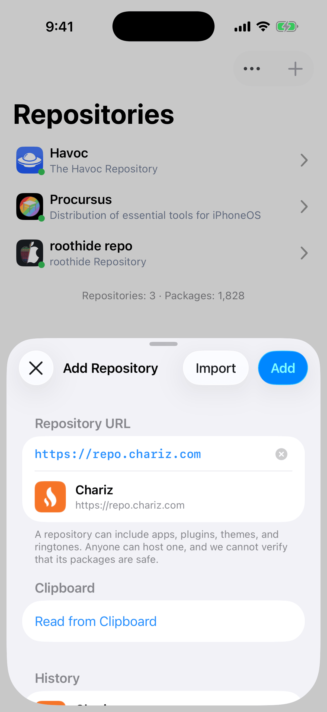
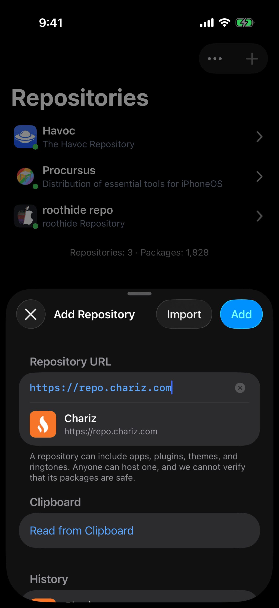
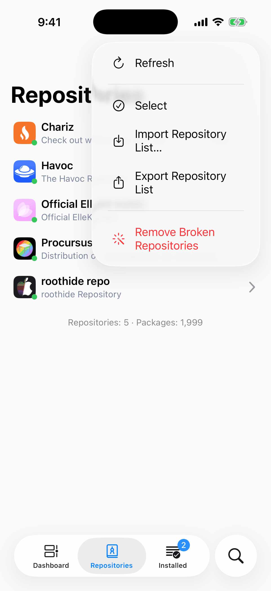
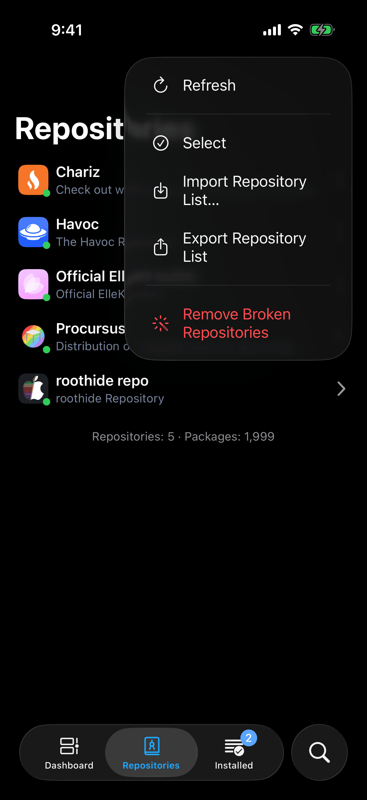
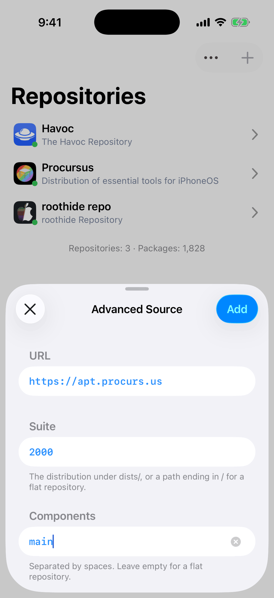
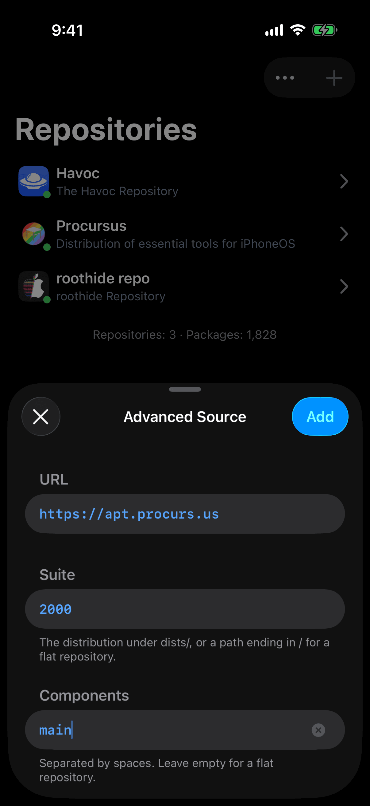
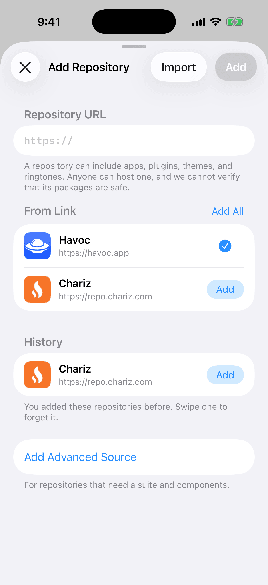
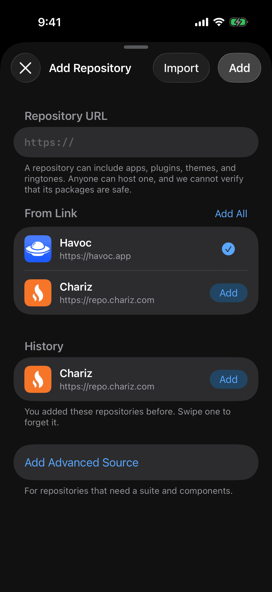

A repository is an address that offers packages. After this chapter you can add any repository, tell a healthy one from a broken one, move your list to another device, and buy from a vendor.
Add a Repository
- Open the Repositories tab and tap the add button. The Add Repository sheet opens.
- Tap the field under Repository URL. Irisin fills in
https://, so you type only the host, for examplerepo.chariz.com. - Stop typing and wait. The row under the field shows the host with a spinner, then the repository's own name and icon.
- Tap Add in the bar. The repository joins your list, the sheet closes, and the first refresh starts.


Add stays dimmed until the lookup has come back, whether the address answered or not. Return on the keyboard does the same as Add. The lookup only reads the repository's name and icon. It adds nothing to your list.
You may leave out https://. Irisin adds it and drops any slashes at the end of the address.
If It Says Repository Unreachable
When the row reads Repository Unreachable, the address did not answer with a repository. Check the spelling first. If you tap Add anyway, Irisin asks Add Unreachable Repository? with the message This address did not respond. You can add the repository anyway and refresh it later. Choose Cancel to go back to the field, or Add to keep the address in your list for a later refresh.
If It Says Already Added
Already Added with This repository is already in the list. means nothing changes: the repository you have stays as it is.
From the Clipboard
Under Clipboard, tap Read from Clipboard. Irisin reads the clipboard only when you tap that row, never on its own. The addresses it finds replace the row, each with its own Add, and the header gains Add All. A short notice counts them, for example Repositories found: 2. When the clipboard holds no address, you see No Repositories Found with The clipboard has no repository address. and the sheet stays as it was.
The two kinds of Add behave differently. A row's Add adds that repository on the spot, turns into a checkmark, and keeps the sheet open so you can add the next one. Add in the bar adds what you typed in the field and closes the sheet.
History
History lists repositories you added before and later deleted. Tap one to add it again. To drop one from the list for good, swipe it and tap Forget. The footer says the same: You added these repositories before. Swipe one to forget it. The section is absent when you have never deleted a repository.
The footer under the address field repeats the safety note from The Welcome Page: A repository can include apps, plugins, themes, and ringtones. Anyone can host one, and we cannot verify that its packages are safe.
A Repository's Page
Tap a repository in the list to open its page. At the top are the repository's featured banners, if it has any. Below them, Packages holds one row, All, with the number of packages the repository offers. Sections follows, with one row for each section the repository sorts its packages into.
The footers tell you about the repository itself. Under All is the repository's own description, or No description. when it gives none. Under the sections are the counts, for example Packages: 412 · Sections: 9, and the date and time of the last refresh, for example Last updated: Sep 20, 2026 at 9:41:07 AM. Before the first refresh it reads Never in place of the date.
A repository you have just added may look empty, because its first refresh has not finished yet. Tapping a section then says No Packages with Refresh the repository and try again. You do not need to leave the page: it fills in by itself when the refresh finishes.
The share button in the bar opens a menu:
- Copy Address copies the repository's address.
- Copy APT Source copies the address too, or the whole
deb …line when the repository has a suite and components. - Share opens the share sheet for this one repository.
- Export Packages and Export All Repository Information… write files. See Import and Export.
After either copy, a notice says Copied.
Refresh and Status
A refresh asks a repository what it offers now. There are three ways to start one:
- Pull the list down to refresh every repository, no matter how recently it was fetched.
- Tap the … button and choose Refresh to refresh only the repositories that have not been fetched in the last 24 hours. If none is due, you see No update required with Tap again to refresh all. Choose Refresh again right away and every repository refreshes.
- Swipe one row to the left and tap Refresh to refresh that repository alone.


Irisin also starts its own refresh shortly after it opens, for every repository last fetched more than 24 hours ago.
The small dot at the corner of each repository's icon shows its state:
- Cyan: the repository is waiting to refresh or is downloading.
- Green: the repository is healthy and fresh.
- Red: the repository has no packages, gave no information about itself, or has not been fetched for more than 24 hours.
A red dot also means stale, not only broken. Refresh the repository before you decide that it is gone.
While a repository refreshes, a tint widens across its row to show the progress. The badge on the Repositories tab counts the repositories that are still refreshing. The line under the list counts what you have, for example Repositories: 6 · Packages: 12480.
When you have no repositories, the list holds one row: No repositories with Use the add button above to add a repository.
Advanced Source
Some repositories need a suite and components as well as an address. For those, scroll to the last row of the add sheet and tap Add Advanced Source. The add sheet closes and the Advanced Source sheet takes its place.
- Fill in URL, Suite, and Components. For Procursus on iOS 17 they are
https://apt.procurs.us,2000, andmain. - Watch Add. It is enabled when the three fields form a valid source.
- Tap Add. The sheet closes and the first refresh starts.


A valid source has a host, and then one of three shapes: no suite at all; a suite that ends in / with no components, which is a flat repository; or a suite with at least one component. The footers on the sheet say the same: The distribution under dists/, or a path ending in / for a flat repository. under Suite, and Separated by spaces. Leave empty for a flat repository. under Components.
Nothing is looked up on this sheet, so a typo is only found at the first refresh, when the repository stays empty and its dot turns red. An address that is already in your list is ignored, and no alert says so.
Links
Irisin opens two kinds of link. A repository link is irisin://repository/add?url=…, with &suite=…&component=… after it when the repository needs them. A package link is irisin://package/<identifier>.
A repository link opens the add sheet with its addresses listed under From Link. Nothing is added until you tap Add on a row or Add All in the header. A repository you already have is listed too, with a checkmark in place of its button.


A package link opens that package's page, at the newest version any of your repositories offers. If none of them offers it, nothing opens and Irisin says Package Not Found with No added repository offers “com.example.package”. Add the repository that has it, then try again.
A link Irisin cannot read is refused, never guessed at: Unable to Open Link with This link is not valid. If you write links for others, these are what Irisin refuses:
- a parameter it does not know;
- a parameter with an empty value;
- a repository link with no
url; - an address without its own
http://orhttps://; - a second
suite; - a
suitetogether with more than one address.
Import and Export
Irisin has two file types of its own:
| File | What It Holds | Made By |
|---|---|---|
.irisinrepos | A list of repository addresses. | Export Repository List and Share |
.irisinrepo | One repository with its whole catalog. | Export All Repository Information… |
Neither holds a sign-in. Your vendor accounts stay on the device.
Export Your List
- On the Repositories tab, tap the … button.
- Choose Export Repository List. The share sheet opens with a file named
Repositories-<date>.irisinreposthat holds every address in your list.
With no repositories, Irisin says Nothing to Export and writes no file.
Share One Repository
- Swipe a row to the right and tap Share. The file is an
.irisinreposwith that one address in it. - Touch and hold a row and choose Export All Repository Information…. The file is an
.irisinrepo: the repository with its whole catalog.
Import
- Choose the file in one of three ways: tap the … button and choose Import Repository List…; tap Import on the add sheet; or open the file from Files or Mail. Irisin's file picker shows only these two file types.
- The add sheet lists the addresses you do not have yet under From File.
- Tap Add on a row, or Add All. Nothing is added before you do.
An import takes the addresses and nothing else, even from an .irisinrepo that carries a catalog. The name, description, and packages you see afterward come from the server at the refresh that follows, not from whoever made the file.
- The file
.irisinrepoor a list- address
- the file
- name
- the file
- packages
- the file
- From Fileon the add sheet
- address
- the file
- name
the file- packages
the file
- The first refreshstarts when you tap Add
- address
- the file
- name
- the server
- packages
- the server
Three messages belong to these files:
| Alert | Message | What It Means |
|---|---|---|
| Unable to Import | This file could not be read. Choose another file. | The file is damaged, is not one of the two types, or was written by a newer Irisin than yours. |
| Nothing to Import | This file has no new repositories to add. | Every address in the file is already in your list. |
| Unable to Export | The file could not be written. Try again. | No file was made, and the share sheet does not open. |
Export Packages on a repository's page is a different kind of export. It writes that repository's catalog as a .txt file, one package per line, for you to read. Irisin cannot import it. For every other export, see The Menu and Exports.
Remove a Repository
To remove one repository:
- Swipe its row to the left and tap Delete.
- Irisin asks Delete Repository? with Packages from deleted repositories will no longer be listed. This cannot be undone. and the repository's name.
- Tap Delete.
To remove several at once:
- Tap the … button and choose Select, or drag two fingers down the list.
- Tick the repositories to remove.
- Tap Delete in the bar. The alert's title carries the count, for example Delete 3 Repositories?
- Tap Delete.
The repository's packages leave every list, and your sign-in for that repository is deleted. The packages you installed from it stay installed. The address stays too, as a line in History on the add sheet, so you can add it back.
Remove Broken Repositories
Tap the … button and choose Remove Broken Repositories. It removes every repository that has no packages and is not refreshing at that moment. It asks first with Remove Broken Repositories?, lists their names, and removes them when you tap Remove All. When there are none, it says No broken repositories.
Refresh before you use it. A repository that has never been fetched has no packages either, so it counts as broken until its first refresh succeeds.
Vendor Accounts and Purchases
A vendor is a repository that sells packages and holds your account. The Account button appears on a repository's page only if the repository sells packages. While you are signed out, tapping it starts Sign In: the vendor's own page opens in a sheet, and you sign in there. Sign-in sends your device's identifier and model to the vendor. If you close the sheet yourself, nothing happens and no error appears.
Once you are signed in, the button is a menu with Purchased, which lists what you bought from this vendor, and Sign Out. The same menu is under Settings → Vendor Accounts, with one row for each repository that sells. That group is absent when none of your repositories does. See Vendor Accounts.
Buy a Package
On the page of a package that is for sale and not installed, the button reads Buy, shown in capitals, in place of Install.
- Tap the button.
- If you are signed out, sign-in starts for that repository and nothing is queued. Sign in, then tap the button again.
- If you are signed in, Checking Purchase… appears while Irisin asks the vendor.
- If you already bought the package, it goes to the queue like any other. If you have not, the vendor's purchase page opens in a sheet. After you pay, tap the button again.
These are the messages a vendor can cause:
| Alert | Message | What It Means |
|---|---|---|
| Sign-In Failed | Sign-in did not complete. Try again. | The vendor's page came back without signing you in. |
| Vendor Unavailable | The vendor did not answer. Try again. | Irisin could not find out whether you own the package, so nothing is queued. |
| Download Unavailable | The repository did not provide a download for this purchase. Try again later. | You own the package, but the vendor gave no download for it. |
| Package Unavailable | This package is not available. Contact the vendor for support. | You have not bought the package, and the vendor is not selling it. |
| Unable to Load Purchases | The vendor did not answer. Try again. | Purchased asked the vendor what you own and got no answer, so no list opens. |
A purchased package is downloaded through a link the vendor gives Irisin when you queue it, and that link expires. If the download then fails in the queue, the failure ends with this line: A purchased package's download link expires. Remove it from the queue and add it again.